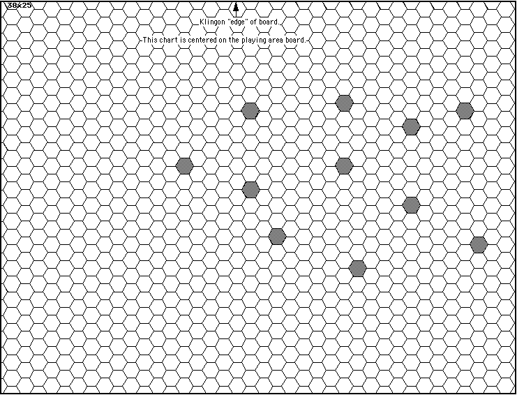

Scenario 15, prepared by David Ternes
Planetary Geography.
There is a small asteroid field in the battle area. The locations are shown on the accompanying chart.

Setup.
The setup requirements and limits are specified in the player information.
Victory Conditions.
This is a stand up fight. Victory goes to the side to cause the most damage or to run their opponents off.